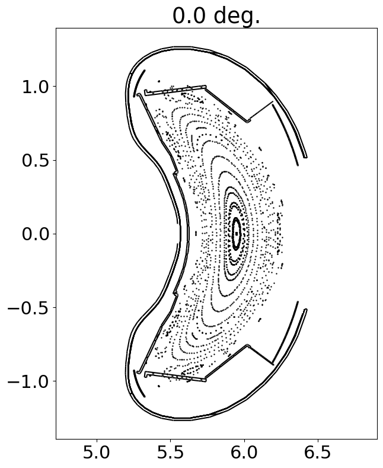
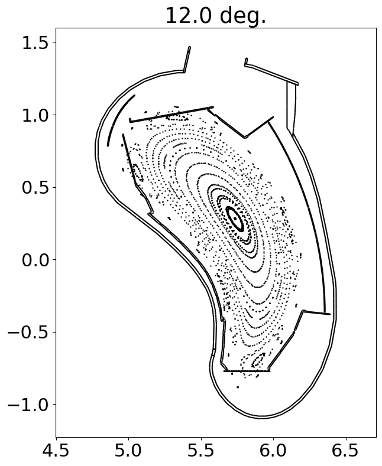
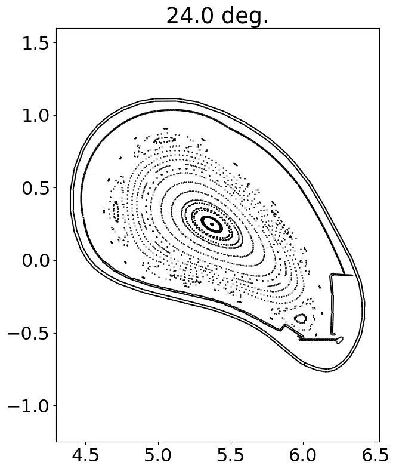
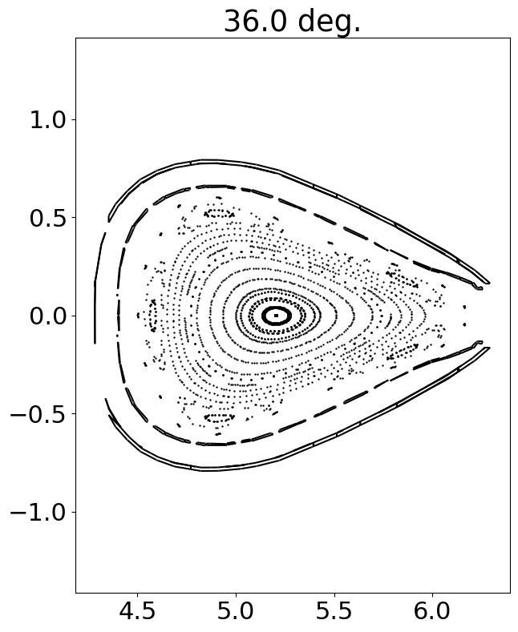
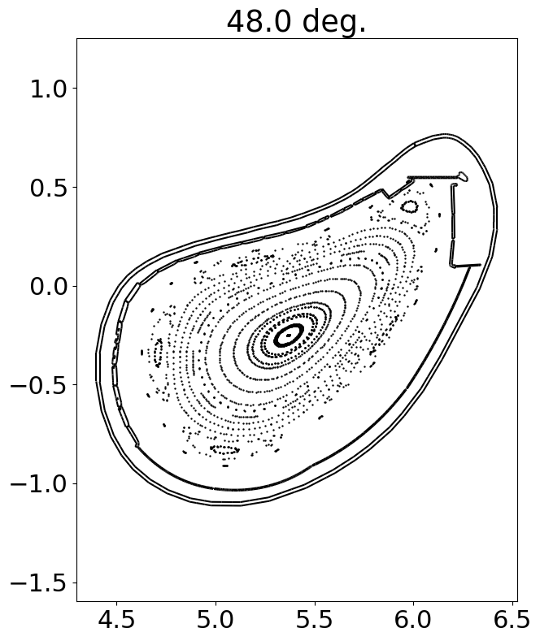
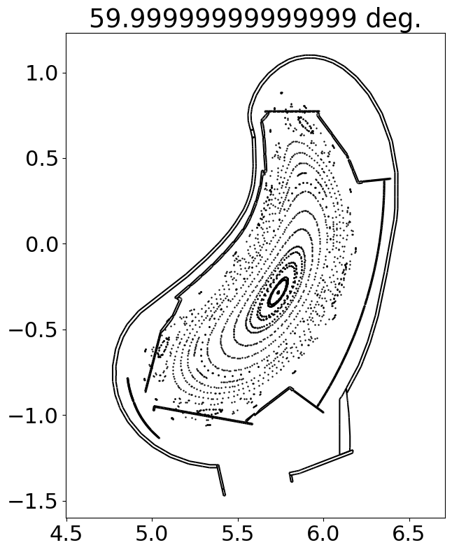

Connecting to a remote server
This example demonstrates how to connect to a remote FusionSC server. Please see the server example to check how to run the corresponding server program.
import fusionsc as fsc
from fusionsc.devices import w7x
backend = fsc.remote.connect("http://localhost:12345")
fsc.backends.alwaysUseBackend(backend)
import numpy as np
phiPlanes = np.linspace(0, 2 / 5 * np.pi, 6, endpoint = False)
# Put more starting points inside the island
rStart = np.concatenate([
np.linspace(4.5, 4.8, 10, endpoint = False),
np.linspace(4.8, 5.4, 10)
])
phiStart = np.linspace(0, 2 * np.pi, 5, endpoint = False) + np.pi
# Starting on an r, phi grid allows us to see all 5 islands
rStartG, phiStartG = np.meshgrid(rStart, phiStart, indexing = 'ij')
xStart = rStartG * np.cos(phiStartG)
yStart = rStartG * np.sin(phiStartG)
zStart = 0 * rStartG
startPoints = [xStart, yStart, zStart]
field = w7x.standard()
# Let's cheapen our calculation a bit for demonstration
grid = w7x.defaultGrid()
grid.nR = 64
grid.nZ = 64
grid.nPhi = 32
pcPoints = fsc.flt.poincareInPhiPlanes(
startPoints, field, phiPlanes, 200,
grid = grid,
distanceLimit = 1e3, targetError = 1e-3
)
import matplotlib
import matplotlib.pyplot as plt
matplotlib.rcParams.update({'font.size': 22})
geometry = w7x.op21Geometry().merge()
for iPhi, phi in enumerate(phiPlanes):
x, y, z, cLenF, cLenB = pcPoints[:, iPhi, :, :].reshape([5, -1])
r = np.sqrt(x**2 + y**2)
# Negative connection lengths indicate that the line segment going through
# the point in that direction is not terminated by collision (e.g. it left
# the grid or hit the distance limit)
mask = np.logical_and(cLenF > 0, cLenB > 0)
mask2 = np.logical_and(cLenF < 0, cLenB < 0)
cLen = cLenF + cLenB
plt.figure(figsize = (7, 9))
plt.title(str(np.degrees(phi)) + ' deg.')
#plt.scatter(r[mask], z[mask], c = cLen[mask], norm = matplotlib.colors.LogNorm(), s = 1)
#plt.colorbar(label = 'Connection length [m]')
plt.scatter(r[mask2], z[mask2], c = 'k', s = 0.5)
geometry.plotCut(phi, edgecolors = 'k')
plt.axis('equal')





